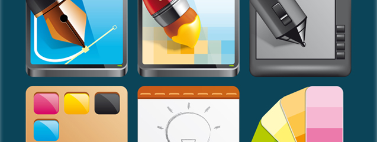

Historia del Diseño Gráfico
El diseño gráfico es una disciplina creativa que se ocupa de la producción visual de comunicaciones, que combinan texto, imágenes y otros elementos visuales para transmitir un mensaje o una idea. La historia del diseño gráfico se remonta a la antigüedad, cuando las personas utilizaban imágenes y símbolos para comunicarse. Desde entonces, ha evolucionado de manera significativa, impulsado por los avances en la tecnología, la cultura y las necesidades sociales.
Los inicios del diseño gráfico
Los primeros vestigios de diseño gráfico se encuentran en las pinturas rupestres y las representaciones de la antigua Mesopotamia, Egipto, Grecia y Roma. En estas culturas, los símbolos y las imágenes eran utilizados para transmitir información y para decorar objetos como vasijas y textiles
Durante la Edad Media, los monjes iluminadores utilizaban técnicas de diseño para producir manuscritos y libros religiosos. Estos trabajos incluían letras decorativas, ilustraciones y miniaturas que añadían un valor estético y emocional a los textos religiosos.
En el Renacimiento, el diseño gráfico comenzó a ser utilizado en la producción de carteles y folletos para anunciar espectáculos y eventos públicos. Los diseñadores de la época, como Albrecht Dürer y Leonardo da Vinci, aplicaban los principios de la perspectiva y la proporción para crear diseños equilibrados y estéticamente atractivos.
Tendencia en el Diseño Gráfico

Diseño Minimalista
Las tendencias en diseño gráfico pueden variar dependiendo del año, la influencia cultural y tecnológica en ese momento. Aquí te presento algunas tendencias que han sido prominentes en los últimos tiempos:
Diseño minimalista: La simplicidad sigue siendo una tendencia fuerte en diseño gráfico. El uso de espacios en blanco, tipografía simple y colores neutros para crear diseños limpios y elegantes.
Diseño tipográfico creativo: El enfoque en la tipografía como elemento principal del diseño, utilizando letras personalizadas, combinaciones inusuales de fuentes y manipulación de texto para transmitir mensajes de manera impactante.
Diseño responsivo: Con el aumento del uso de dispositivos móviles, el diseño responsivo se ha convertido en una necesidad. Los diseñadores están creando contenido que se adapta y se ve bien en una variedad de dispositivos y tamaños de pantalla.
Ilustraciones y gráficos personalizados: Las ilustraciones y gráficos únicos y personalizados están ganando popularidad para agregar un toque distintivo a los diseños. Esto incluye ilustraciones hechas a mano, gráficos vectoriales y arte digital.
Diseño 3D y efectos visuales: El diseño en 3D está en aumento, especialmente en áreas como el diseño de logotipos, renderización de productos y creación de imágenes realistas. También se están utilizando efectos visuales creativos, como la superposición de imágenes y la manipulación fotográfica.
Diseño sostenible y consciente: Con una mayor conciencia ambiental, los diseñadores están adoptando prácticas más sostenibles y conscientes. Esto incluye el uso de materiales reciclados, diseño de bajo consumo de energía y mensajes que promueven la sostenibilidad.
Diseño centrado en la accesibilidad: La accesibilidad digital es cada vez más importante en el diseño gráfico. Los diseñadores están trabajando para crear diseños que sean accesibles para personas con discapacidades visuales, auditivas y motoras, mediante el uso de contraste adecuado, texto alternativo y navegación intuitiva.
Estilo retro y vintage: El estilo retro sigue siendo popular en diseño gráfico, con referencias a las décadas pasadas y estilos de diseño vintage. Esto puede incluir paletas de colores retro, tipografía vintage y estilos de ilustración inspirados en épocas anteriores.

Diseño 3D